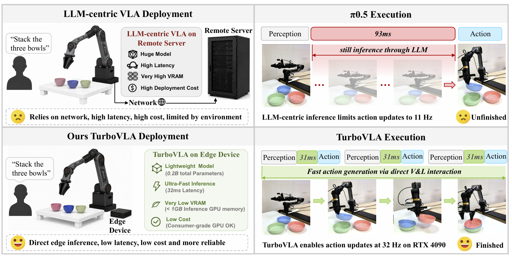
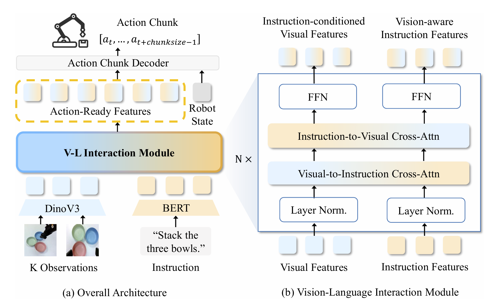

LIBERO
TurboVLA
Real-Time Vision-Language-Action Model at 32 Hz on an RTX 4090 with <1 GB VRAM
TurboVLA enables compact local deployment and real-time language-conditioned manipulation with 0.2B parameters, 0.9 GB inference VRAM and 31.2 ms policy latency.
1 Huazhong University of Science and Technology ·
2 Huawei Technologies
*Equal contribution †Project lead
Abstract
Vision–language–action (VLA) models commonly adopt an LLM-centric V→L→A pathway, where visual observations are projected into the representation space of a large language model before being decoded into robot actions. Although effective, this design incurs substantial computation and memory overhead at every policy invocation. In this work, we introduce TurboVLA, a new VLA paradigm that reformulates the conventional V→L→A pathway as a direct V+L→A mapping. Instead of using a large language model as the central interface between perception and action, TurboVLA independently encodes visual observations and language instructions, directly exchanges information between them through lightweight bidirectional vision-language interaction, and predicts continuous action chunks with a compact decoder. This simple design constructs task-conditioned representations directly from visual and linguistic features, significantly reducing the computational and memory costs of VLA inference. On LIBERO, TurboVLA achieves 97.7% average success with only 0.2B parameters, 31.2 ms inference latency, and 0.9 GB inference VRAM on a consumer-grade RTX 4090, matching or outperforming substantially larger VLA policies. These results establish TurboVLA as a simple and effective alternative to the prevailing LLM-centric VLA paradigm, offering a new perspective on how vision, language, and action can be connected for efficient robotic manipulation.

Method
We use DINOv3 (Siméoni et al., 2025) as the visual backbone and BERT (Devlin et al., 2019) as the lightweight instruction encoder. Visual and textual features are projected into a shared space with d = 256 and processed by N = 6 bidirectional vision-language interaction layers initialized from grounding-pretrained feature-enhancement weights (Liu et al., 2024b). An ACT-style transformer decoder (Zhao et al., 2023) maps the resulting multimodal features and robot state to continuous action chunks. Across all benchmarks, we train through behavior cloning with the ℓ1 loss, using a learning rate of 5 × 10−5 on four RTX 4090 GPUs. Benchmark-specific settings are described below.

DINOv3 + BERT
We use DINOv3 (Siméoni et al., 2025) as the visual backbone and BERT (Devlin et al., 2019) as the lightweight instruction encoder.
6 interaction layers
Visual and textual features are projected into a shared space with d = 256 and processed by N = 6 bidirectional vision-language interaction layers initialized from grounding-pretrained feature-enhancement weights (Liu et al., 2024b).
Action horizon 12
An ACT-style transformer decoder (Zhao et al., 2023) maps the resulting multimodal features and robot state to continuous action chunks.
Results
Tab. 1 and Tab. 2 present complementary evaluations of TurboVLA on simulation benchmarks. From these results, we draw the following observations.
0.2B
parameters
31.2 ms
policy latency
0.9 GB
inference VRAM
97.7%
LIBERO average
| Method | Params (B) ↓ | VRAM (GB) ↓ | Latency (ms) ↓ | LIBERO avg. ↑ |
|---|---|---|---|---|
| TurboVLA | 0.2 | 0.9 | 31.2 | 97.7 |
| VLA-Adapter | 1.5 | 4.3 | 87.3 | 97.3 |
| π0.5 | 3.4 | 12.8 | 93.6 | 96.9 |
| OpenVLA-OFT | 7.7 | 15.7 | 112.2 | 97.1 |
| SmolVLA | 2.3 | 7.1 | 203.1 | 88.8 |
RoboTwin 2.0
One policy, 50 clean tasks
0.4B parameters · 43.4 ms latency · multi-task training
Simulated Environments
We evaluate TurboVLA across three complementary settings: single-arm manipulation on LIBERO (Liu et al., 2023), bimanual manipulation on RoboTwin 2.0 (Chen et al., 2026b), and deployment on a real robotic platform.
LIBERO
Four suites
RoboTwin 2.0
Clean50
05 / Citation
Cite TurboVLA
Please use the following citation if TurboVLA is useful in your research.
@article{xie2026turbovla,
title = {TurboVLA: Real-Time Vision-Language-Action Model at
32 Hz on an RTX 4090 with <1 GB VRAM},
author = {Xie, Hengyi and Yao, Chenfei and Wu, Xianjin and
Xi, Xuanyang and Tang, Yiping and Xu, Di and
Zhu, Yingying and Liang, Dingkang and Bai, Xiang and
Ding, Han},
journal = {arXiv preprint arXiv:2607.27205},
year = {2026}
}